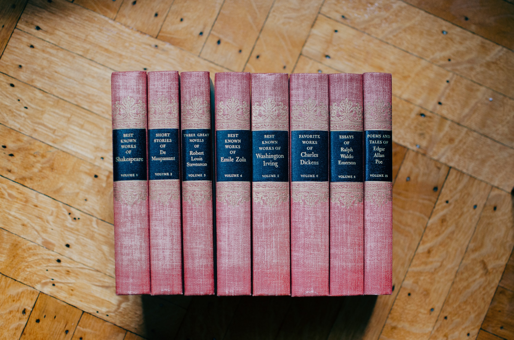

Mystery

I'm starting out with my favorite genre, because why not?
I feel like mystery is a genre that can be loved by anyone. The suspense, guessing, and the cool detective characters always have the readers wanting more. They're suitable for readers who enjoy trying to actively solve things.
Some mystery books that I'd recommend:
- And Then There Were None by Agatha Christie.
- One of Us Is Next by Karen M. McManus.
- Murder on The Orient Express by Agatha Christie.
Thriller
If you enjoy being at the edge of your seat, then this genre is for you.
The thriller genre is one that is closely associated with the mystery genre. However, the difference is that it tends to instill more fear into the readers, making you hold your breathe for the entirety of the journey.
Some thriller books that I'd recommend:
- The Chalk Man by C.J. Tudor.
- Elevator Pitch by Linwood Barclay.
- The Silent Patient by Alex Michaelides.
Romance

We all love a heartwarming romance story.
The romance genre is one that humans never seem to get tired of. Our ancestors wrote a whole lot about love, and we still continue to do so.
Some romance books that I'd recommend:
- Jane Eyre by Charlotte Bronte.
- It Ends With Us by Colleen Hoover.
- The Seven Husbands of Evelyn Hugo by Taylor Jenkins Reid.
Fantasy

If you'd like to explore a different world setting, then fantasy is the best choice.
The world building, magic, and otherworldly creatures are what make the fantasy genre so intriguing. It's an escape from the real world, and more so than other genres. Fantasy books will show you how vast the human imagination could be, and will take you on adventures that you can't experience any other way.
Some fantasy books that I'd recommend:
- The Harry Potter series by J. K. Rowling.
- The Lord of The Rings series by J. R. R. Tolkien.
- A Song of Ice and Fire by R. R. Martin.
Classics
We can't fully appreciate fiction without knowing the great classics that authors came up with in the olden times.
The old classics are what shaped up fiction to be what it is today. It allows you to delve into a different period in time, and shows you how the world was back then, in the eyes of those authors.
Some classic books that I'd recommend:
- Oliver Twist by Charles Dickens.
- The Three Musketeers by Alexandre Dumas.
- Les Miserables by Victor Hugo.